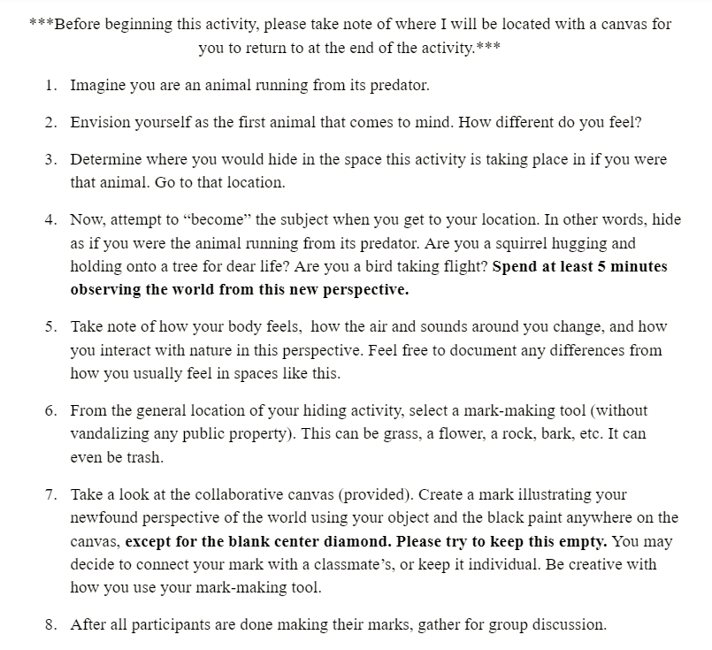
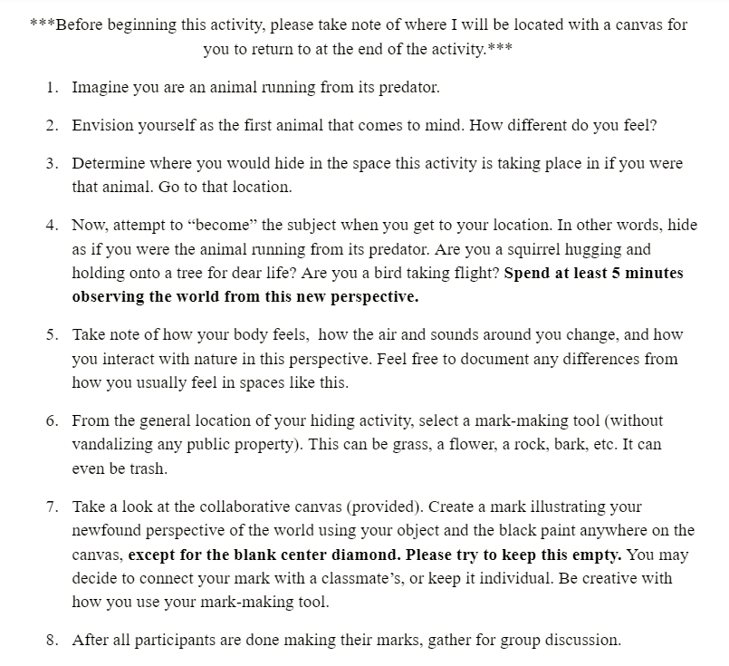

Madiha's Corner
some work of mine
Slow Down
This piece was done using chai tea on various types of paper. The intention was to slow down an activity that I performed daily. I slowed down the action of pouring my loose leaf tea out of the hot pot through a strainer and into my cup. I illustrated this through a series of drawings using the same mediums of tea and a strainer. I begain with a large splatter, as that is often what takes place when one is slowng pouring tea. Then, as I balanced the pot more, the tea would begin to pool more, with the exception of some drops escaping and making their way down the pot or cup. As the process went on, the tea ran out and I was left with the loose leaf. The reason I used various materials was to represent the amount of tea left in the tea bags. As the process went on, the tea had less actual liquid in it and it became lighter. My favorite part about this project was the fact that the tea dried so beautifully in different places.
A Meaningful Place
This piece represents both my experiences in a meaningful place as well as in a meaningless place. Both drawings are meant to depict my thought process through one continuous line. In both, the line (or the "thoughts") ends near where it started after a journey around the page. This is marked using green and yellow. The purpose of this is to illustrate that while my thoughts may run wild when I am sitting alone and contemplating, they still come to an end where they started. Both drawings also have red markings to indicate where my thoughts overlap, both physically on the page and mentally.. When we are going through a thought process, we tend to let one thought lead into another and another and another, etc. We don't just conjure things up without something that we are already thinking about leading us to think about something else. Similarly, the line on the page overlaps and begins a new journey without necessarily breaking the path it is already on.
 

Perspective
The purpose of this activity was to give participants the perspective of animals in our world. We often believe that humans are the ultimate species and this subconciously causes us to ignore the role of animals in our environment. We don’t always think about how other species view the world, and I wanted to bring awareness to this. Humans are not the only ones residing on this planet and it is important to recognize that animals have different perspectives than we do. The purpose of creating the canvas was to show how animals are sometimes metaphorically and physically caged in. The diamond in the center reminded me of a fence, and it was left empty to represent the idea of looking in from the outside, the way we often do through fences. It was quite interesting to see all the differeent animals participants chose to be and how they changed their positions to accomodate for that.